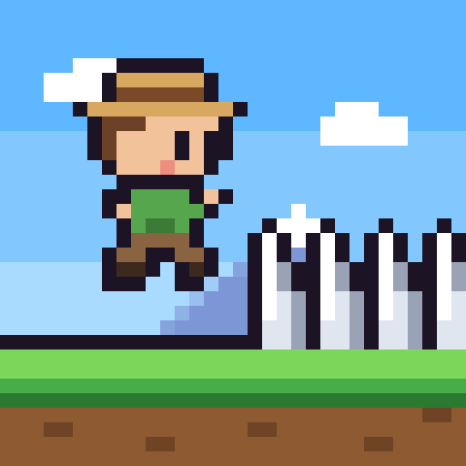
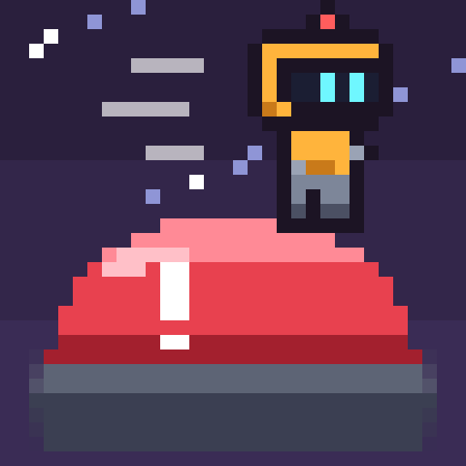
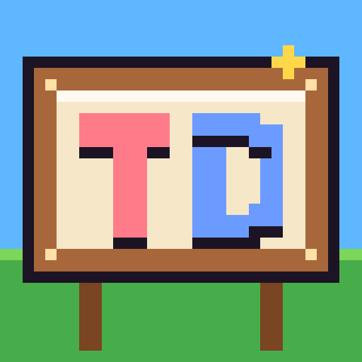
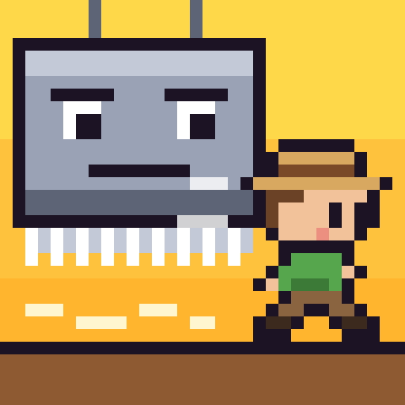
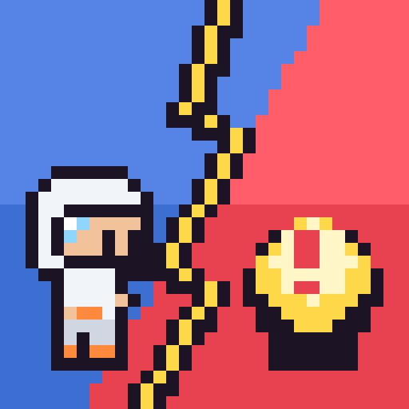

0 · Currentrunner over spikes 1 · Dash Jumpninja leaping spikes at sunset
1 · Dash Jumpninja leaping spikes at sunset
2 · Trap Buttonbig red button, robot runs on it
3 · TD Signthe logo letters on a wooden sign
4 · Crusherangry crusher, explorer escapes 5 · Saw Nightknight vaults a saw by moonlight
5 · Saw Nightknight vaults a saw by moonlight
6 · Runner vs Trapperblue vs red, split by lightning